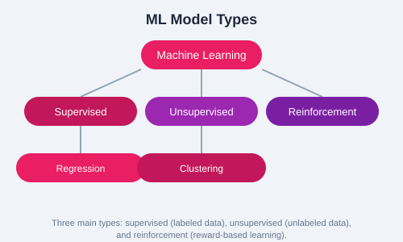

Data preparation is often the most time-consuming part of an ML project. Raw data is messy  it has missing values, inconsistent formats, outliers, and noise. Proper preparation ensures your models train effectively and generalize well.
Data comes in many formats. Pandas provides functions to load CSV, Excel, JSON, SQL databases, and more.
import pandas as pd
# Load from different formats
csv_data = pd.read_csv('data.csv')
excel_data = pd.read_excel('data.xlsx', sheet_name='Sheet1')
json_data = pd.read_json('data.json')
# Quick inspection
print(csv_data.info())
print(csv_data.head(10))Missing data occurs frequently. Options include dropping rows/columns with missing values, imputing with mean/median/mode, or using model-based imputation. The right approach depends on the amount and pattern of missingness.
# Check for missing values
print(df.isnull().sum())
# Drop rows with any missing values
df_clean = df.dropna()
# Fill missing values
df['age'].fillna(df['age'].median(), inplace=True)
df['category'].fillna(df['category'].mode()[0], inplace=True)Most ML algorithms require numerical input. Categorical variables must be converted.
Creates binary columns for each category. Suitable for nominal data with no intrinsic order.
Assigns integer labels to categories. Suitable for ordinal data where order matters.
from sklearn.preprocessing import LabelEncoder, OneHotEncoder
# Label encoding
le = LabelEncoder()
df['color_encoded'] = le.fit_transform(df['color'])
# One-hot encoding
one_hot = pd.get_dummies(df['city'], prefix='city')
df = pd.concat([df, one_hot], axis=1)Features with different scales can bias ML algorithms. Standardization (z-score) and normalization (min-max) are the most common scaling techniques.

Transforms data to have mean 0 and standard deviation 1. Works well when data follows a Gaussian distribution.
Scales data to a fixed range, typically [0, 1]. Suitable when you need bounded values and data does not follow a normal distribution.
from sklearn.preprocessing import StandardScaler, MinMaxScaler
# Standardization
scaler = StandardScaler()
X_scaled = scaler.fit_transform(X)
# Min-max normalization
minmax = MinMaxScaler()
X_norm = minmax.fit_transform(X)Always split your data into training and test sets before training. The model learns from the training set and is evaluated on the unseen test set to assess generalization.
from sklearn.model_selection import train_test_split
X_train, X_test, y_train, y_test = train_test_split(
X, y, test_size=0.2, random_state=42, stratify=y
)stratify=y for classification problems to maintain class proportions in both train and test sets.
Remove duplicates, handle outliers using IQR or z-score methods, standardize date formats, and validate data types. Document all preprocessing steps for reproducibility.
Good data preparation is the foundation of successful ML. Invest time in cleaning, encoding, scaling, and splitting your data properly.